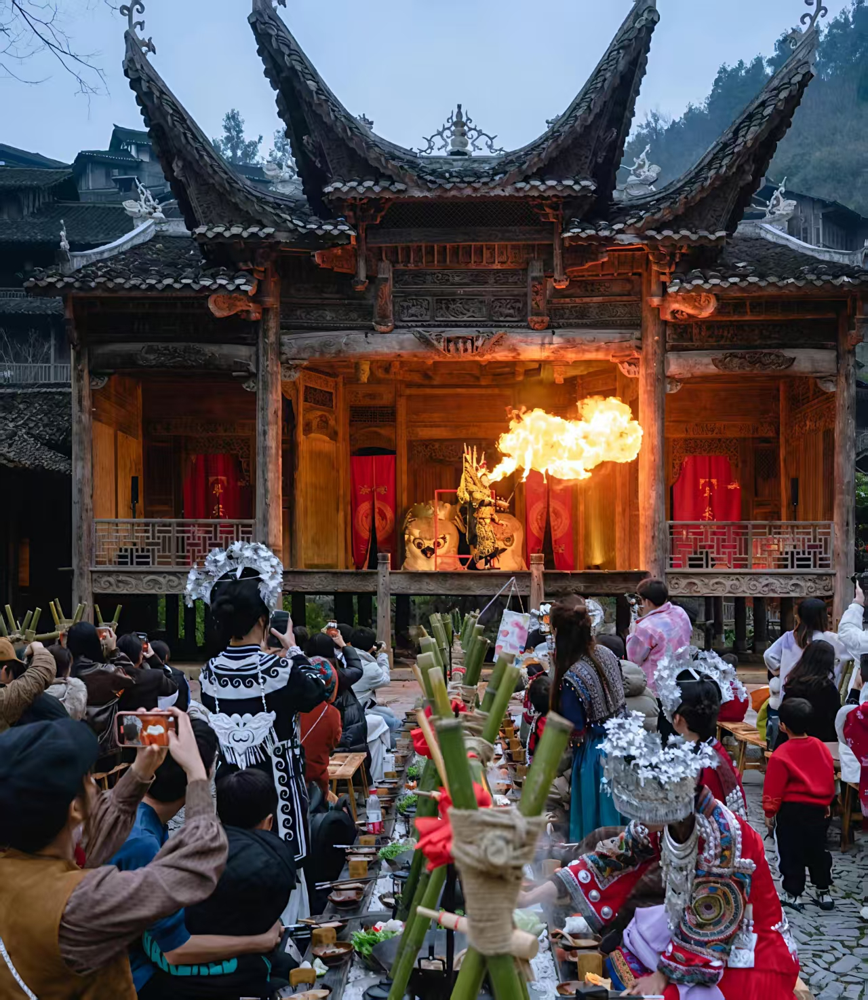

云南 贵州
贵州
- 火把节介绍：云南彝族火把节是彝族地区的重要传统节日，流行于云南彝族聚居区。
- 非遗特色标志地位：云南楚雄彝族火把节入选国家级非物质文化遗产名录。
- 重点城市：楚雄、大理、昆明、石林。
- 火把节介绍：贵州彝族火把节是彝族地区的重要传统节日，流行于贵州彝族聚居区。
- 非遗特色标志地位：贵州赫章彝族火把节入选国家级非物质文化遗产名录。
- 重点城市：赫章。
- 火把节介绍：四川彝族火把节是彝族最重要的传统节日之一，流行于四川凉山彝族自治州。
- 非遗特色标志地位：凉山彝族火把节入选国家级非物质文化遗产名录。
- 重点城市：西昌、昭觉、布拖。
